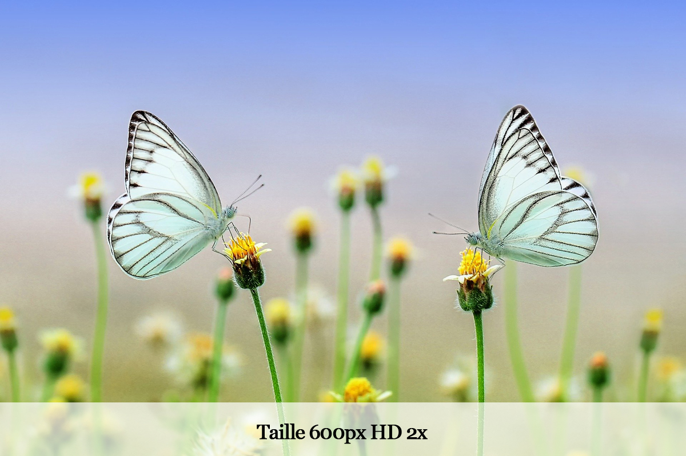

Démo srcset et descripteur x
Le navigateur sélectionne la version HD de l'image si l'écran est HD.
Si le navigateur ne reconnaît pas srcset ou si l'écran n'est pas HD, l'image chargée est celle de src.
Images adaptatives avec les attributs srcset et sizes / l'élément <picture>
Le navigateur sélectionne la version HD de l'image si l'écran est HD.
Si le navigateur ne reconnaît pas srcset ou si l'écran n'est pas HD, l'image chargée est celle de src.
J'indique au navigateur la taille de l'image pour qu'il puisse sélectionner celle qu'il considère comme convenant le mieux.
sizes indique au navigateur quelle doit être la largeur finale de l'image à l'affichage.